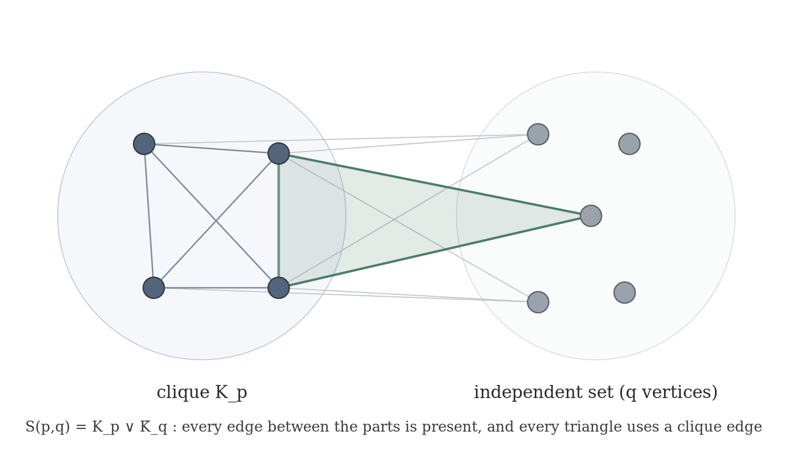
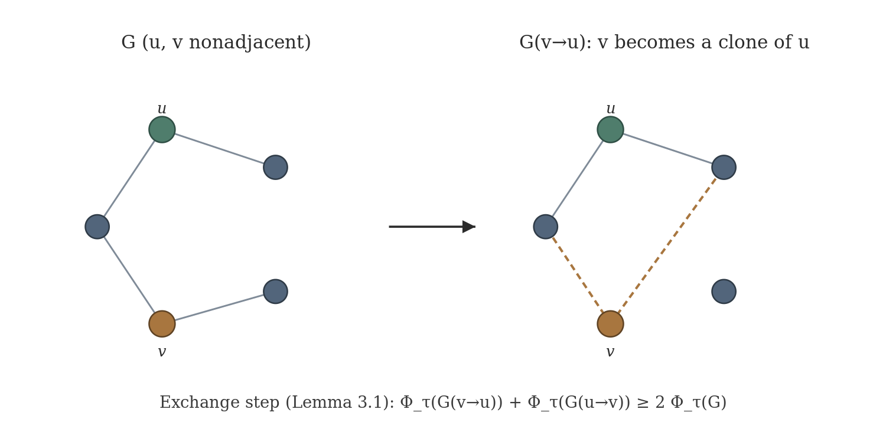
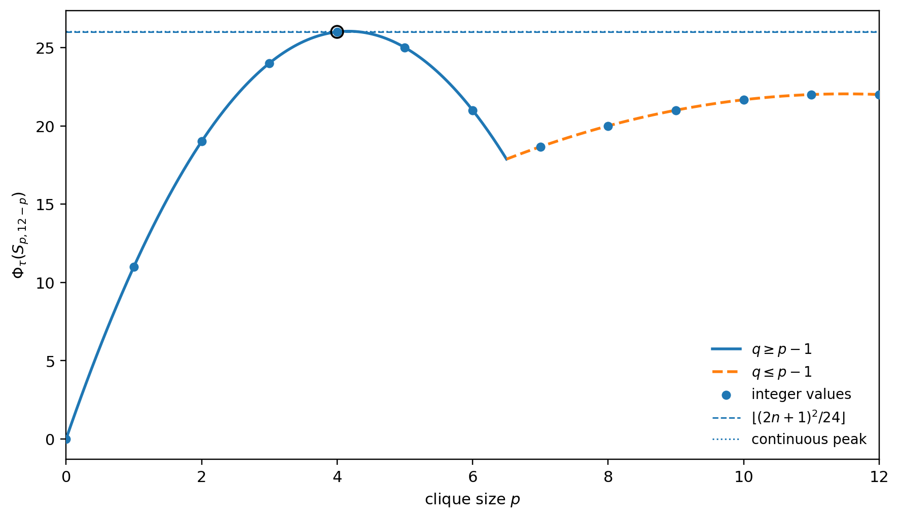

The one-paragraph storyLa historia en un párrafo
Among all chordal graphs on n vertices, which one is hardest to cover by triangles in the fractional sense? This paper names the exact champion — a complete-split graph — and computes the exact record value.Entre todos los grafos cordales con n vértices, ¿cuál es el más difícil de cubrir por triángulos en sentido fraccional? Este paper nombra al campeón exacto — un grafo complete-split — y calcula el valor récord exacto.
IntuitionIntuición
The functional Φ_τ = |E| − 2τ₃* measures edges not paid for by a fractional triangle cover. By finite LP duality ν₃*=τ₃*, so this is the same fractional packing defect studied in Paper I — here maximized over all chordal graphs.El funcional Φ_τ = |E| − 2τ₃* mide aristas no pagadas por una cobertura fraccional de triángulos. Por dualidad LP finita ν₃*=τ₃*, así que es el mismo déficit de packing fraccional de Paper I — aquí maximizado sobre todos los cordales.

The theoremEl teorema
| n | ⌊(2n+1)²/24⌋ | optimal p | extremizer |
|---|---|---|---|
| 3 | 2 | 1 | S₁,₂ |
| 6 | 7 | 2 | S₂,₄ |
| 9 | 15 | 3 | S₃,₆ |
| 12 | 26 | 4 | S₄,₈ |
The methodEl método
A vertex-copy exchange inequality shows an optimum can be pushed to a complete-split graph without decreasing Φ_τ; a two-variable program then pins the exact value. The proof is cover-first and deliberately avoids strong LP duality.Una desigualdad de intercambio por copia de vértice muestra que un óptimo se puede llevar a un complete-split sin bajar Φ_τ; un programa de dos variables fija el valor exacto. La prueba es cover-first y evita a propósito la dualidad LP fuerte.

The formalizationLa formalización

The exact finite theorem is verified in Lean 4 (Mathlib v4.28.0) as PaperII.theorem_1_2, zero-sorry, axiom footprint propext, Classical.choice, Quot.sound.El teorema finito exacto está verificado en Lean 4 (Mathlib v4.28.0) como PaperII.theorem_1_2, cero sorry, huella propext, Classical.choice, Quot.sound.
superseded/preprint_v1.0/. The manuscript and frozen Lean archive passed independent clean-room reproduction and external adversarial review; human peer review and specialist priority review have not been claimed.El preprint v1.2 es la versión oficial del autor; el paquete público completo v1.0 se conserva en superseded/preprint_v1.0/. El manuscrito y el archivo Lean congelado superaron una reproducción independiente en clean room y una auditoría adversarial externa; no se afirma revisión humana por pares ni una determinación especializada de prioridad.